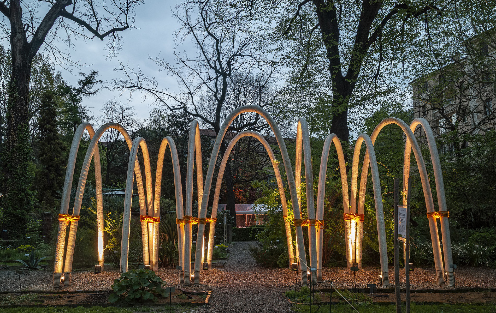

What if tomorrow we might be able to program matter to ‘grow a house’ like a plant?” Carlo Ratti_
“The Circular Garden,” is a temporary installation that was grown from soil over six weeks time – and was returned to the soil at the end of Milan Design Week edition of 2019. It is composed of a series of arches in which mycelium - that is the root fiber of the fungus - was used as a building material.
Milan's Fuorisalone 2019
Commissioned by multinational energy company ENI, the project represented a chance for us designers to question the topic of . Our team was challenged to find a way to give architecture a , where materials and fabrication choices could lead to a .
Mycelium - that is the fibrous root of the mushroom - after weeks of research became the main construction material of the temporary pavilion. .
Architecture was a non-invasive intervention inside a special venue: the botanical garden of Brera: In the context, visitors could walk through the whole garden and could get under the arches.


The final touch of the material is , very eterogeneous and that well blended in the context.
The videoclip below shows well the , very eterogeneous and that well blended in the context.
how did we get there?
When we started researching innovative materials, we fell in love with the idea that could actually grow inside a botanical garden, hence giving a perfect story to tell: . How could the fibrous root of a fungus grow? It needs specific temperature, specific humidity levels and of course something organic to chew, such as hay or hemp.
If the growht is confined within specific moulds, the fungus root becomes a sort of a hardener for the organic substrate.
The first tests showed that the material was performing well under compression and after a long form-finding process we ended up liking the idea of an as a shape. Inspired by the works of Gaudi - above all the corridor of the Collegi de Les Teresianes - we started to create some physical mockups of an , as it was becoming to being.
Construction begun as we teamed up with expert in the Netherlands. We started to go in and out from Den Bosh, a small village in the Dutch countryside, where production took place. After 6 weeks, we got the keys to the botanical garden, ready to go and install!
So, what happened to it in the end? Of course we were not allowed to compost the arches inside the garden, due to restriction from the municipality. The good news came when a farm in the outskirt of Milan offered to come and pick up the 64 arches. Deal.
That's how we managed to create a pavilion .
Behind the scenes
CRA-Carlo Ratti Associati for Eni, as part of “INTERNI Human Spaces” material researching and prototyping, construction site monitoring, public speaking during Fuorisalone architectural design, video editing Marco Beck Peccoz, CRA-Carlo Ratti Associati, Luca Giacolini